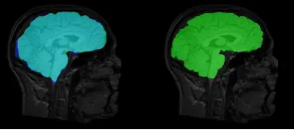
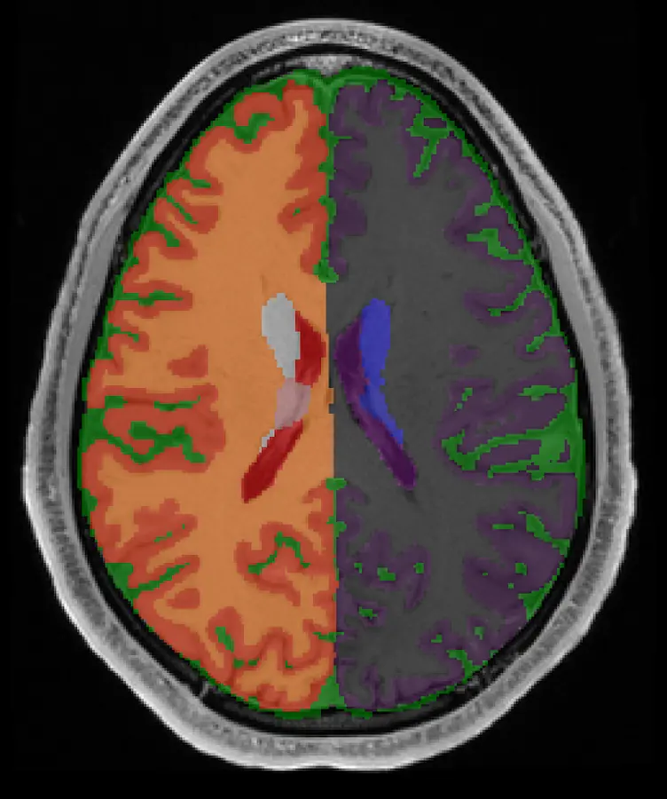
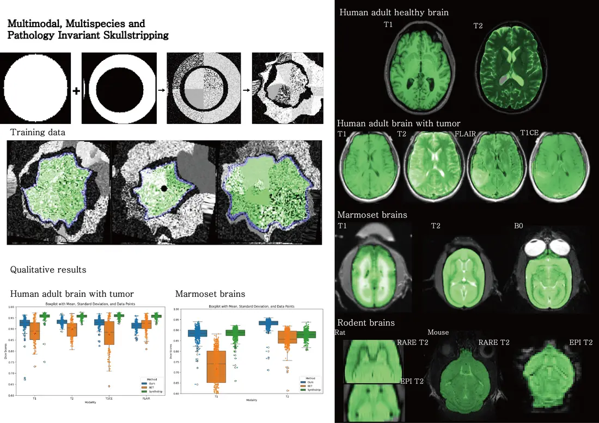

Research
Learning anatomy without losing sight of variation.
I develop machine-learning methods for medical images with an emphasis on generalization, data efficiency, anatomical fidelity, and reproducibility.
01 · Brain extraction
Reliable preprocessing across modalities
Brain extraction is a foundational step in neuroimaging. My work investigates supervised and synthetic-data approaches that remain accurate across imaging modalities, acquisition conditions, species, and anatomy.

02 · Segmentation & anomaly detection
Structure-aware analysis
I study segmentation and registration methods that use shape, location, and tissue context—not intensity alone. Applications include neuroimaging and retinal OCT analysis for detecting glaucomatous defects.

03 · Synthesis & inpainting
Training data built around anatomy
When curated medical data are scarce, synthesis can provide controlled training examples. My research spans fully synthetic skull-stripping data, cross-modality translation, self-supervised denoising, and anatomy-preserving brain inpainting.

Collaborate
Interested in robust medical image analysis?
I welcome conversations around neuroimaging, segmentation, synthetic data, retinal imaging, and open-source scientific software.